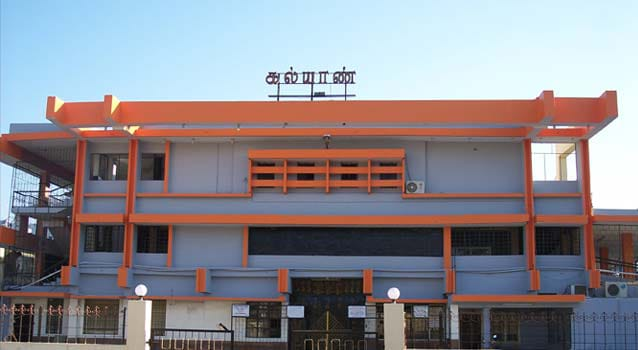

Kalyan Cinemas A/C DTS is a popular movie theatre located in KK Nagar, Villupuram, Tamil Nadu. Situated on NH 45A, it offers air-conditioned auditoriums with DTS sound systems, providing a comfortable viewing experience for moviegoers. The theatre screens a variety of films, including regional, Bollywood, and Hollywood movies, catering to diverse audiences. Tickets can be conveniently booked online through platforms like Paytm and TicketNew.